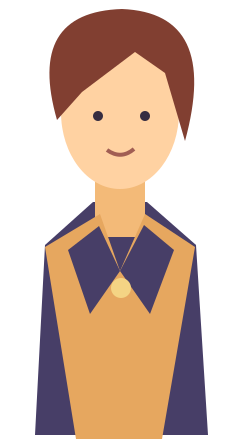
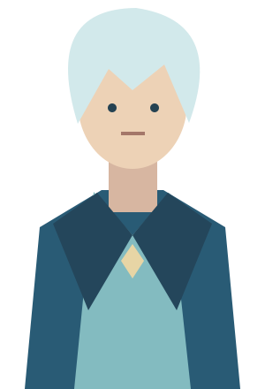

Under portrait


Token Portrait · Test harness
Simulated SDK host — not the Owlbear interface
Deselect
Multi-select
Select shape
Delete selected
Close / reopen scene
Pan / zoom
Ready
Reserved bottom tool area